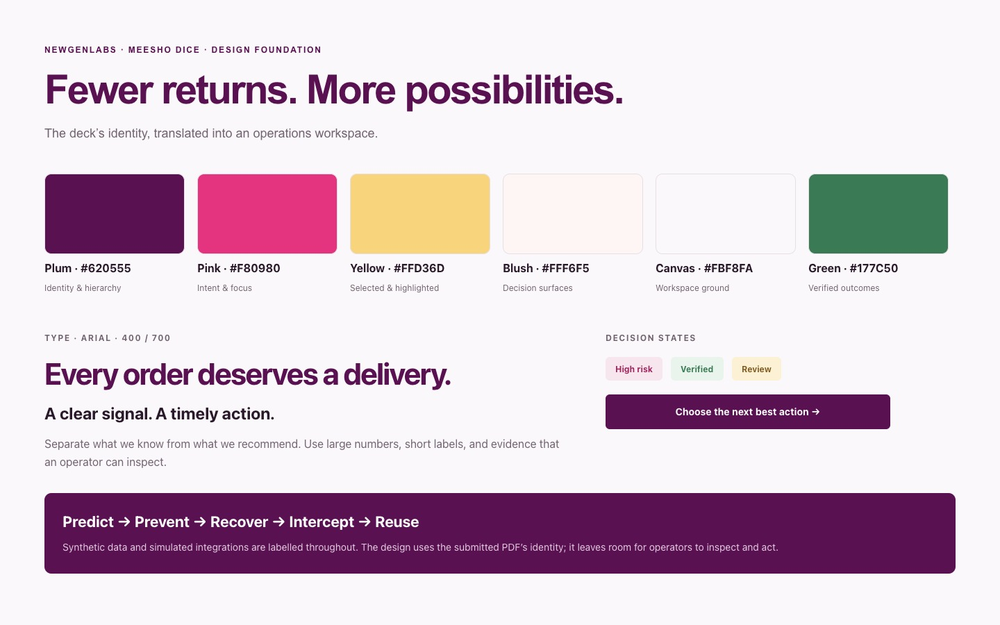
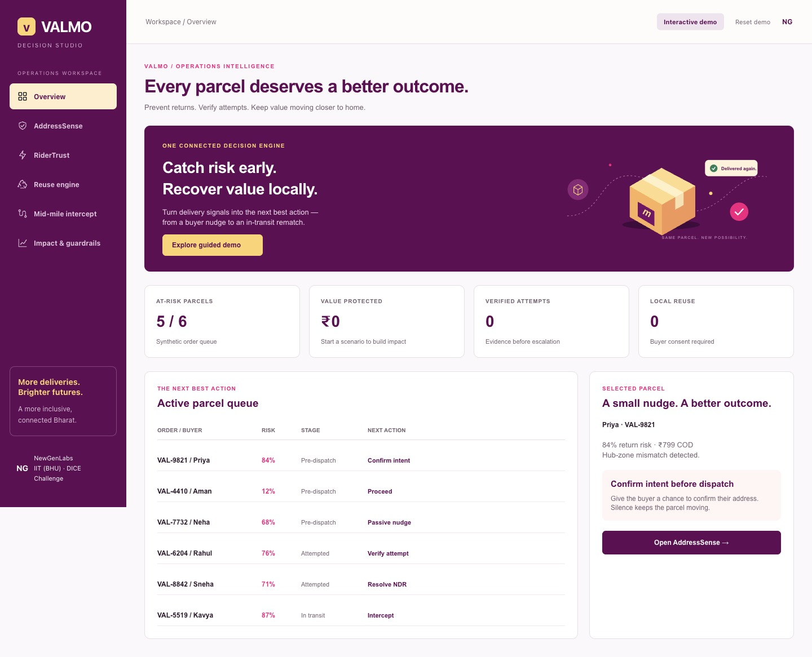
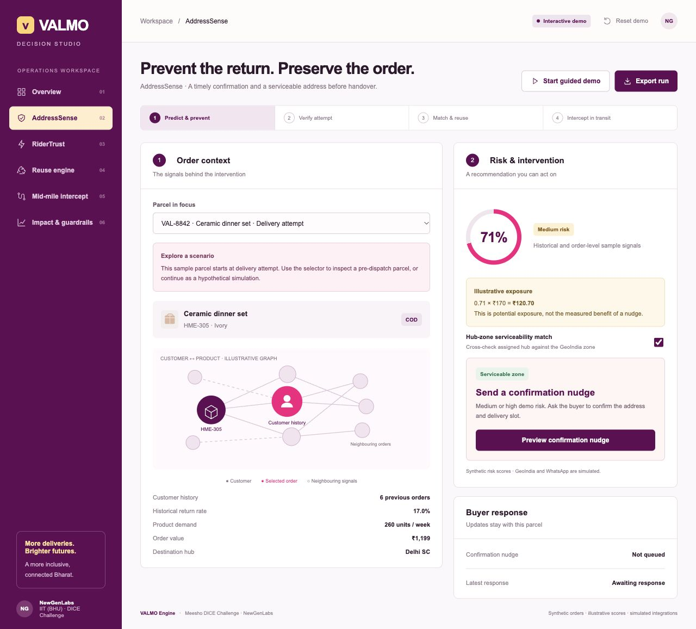
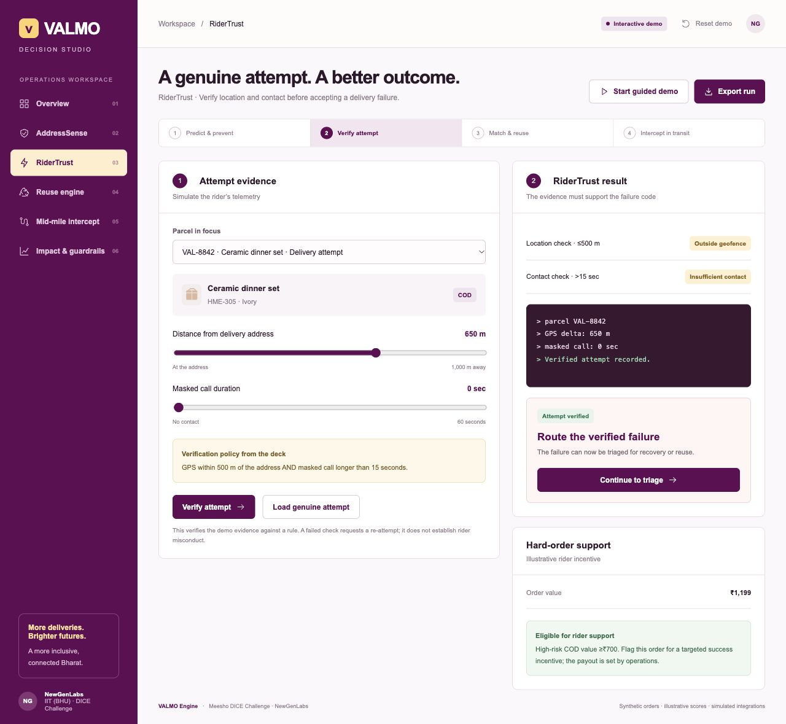
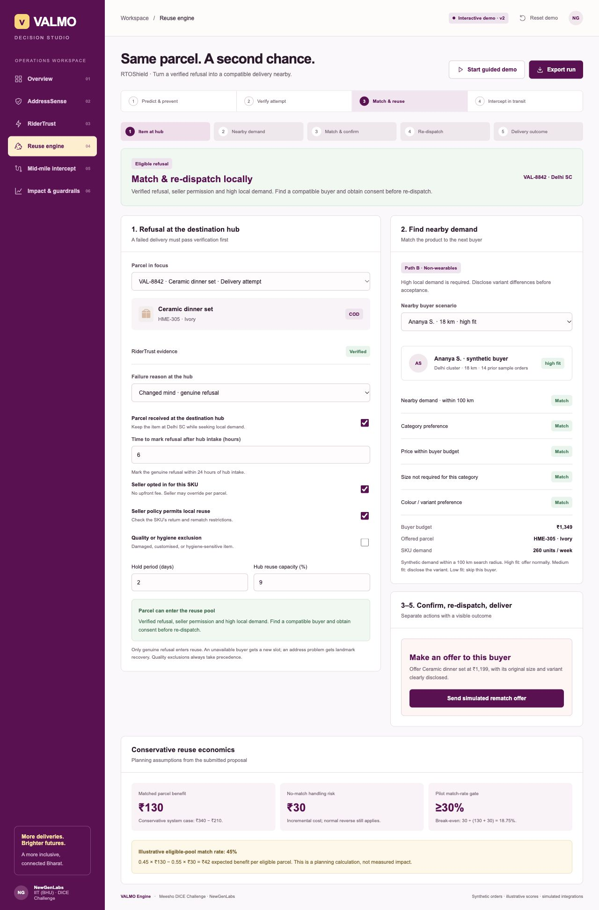
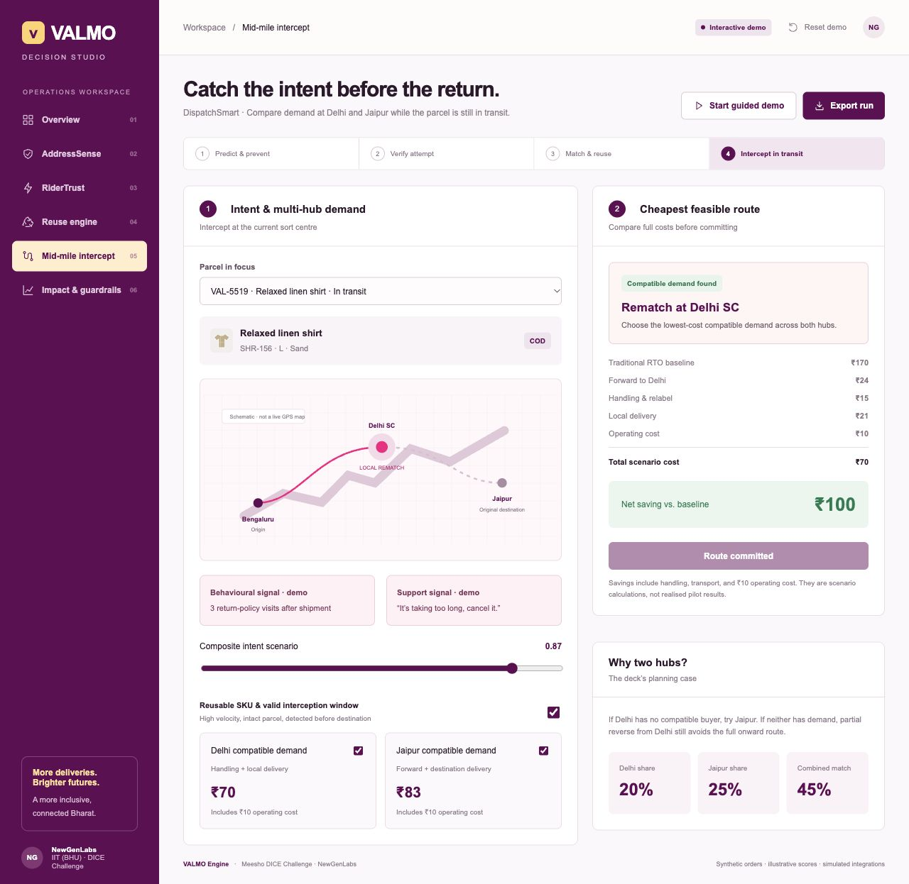
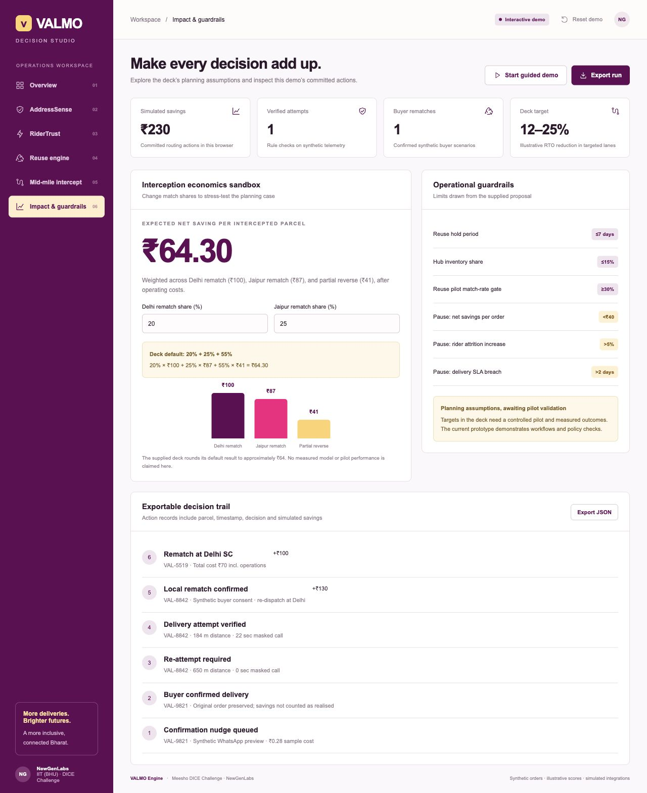

Paper status: Foundations and Overview are complete; AddressSense is partial. The account’s weekly MCP quota blocked further artboards, with a five-day reset. All six application screens are complete in the local frontend. This board distinguishes Paper exports from browser screenshots.
Visual foundation
Paper · completeThe deck’s plum identity anchors the workspace. Pink draws attention to intent, yellow marks selection, blush groups decisions, and green marks verified outcomes.

Workspace and overview
Paper · completeBuild navigation, header, hero, metric cards, queue rows, then the recommendation. Review each section for spacing, typography, contrast, alignment, fit and consistency.

AddressSense
Frontend · complete / Paper · partialOrder context and graph evidence sit beside the next action. A nudge preserves the order; a hub mismatch requires correction. Scores, zones and messages are simulated.

RiderTrust
Frontend · completeEvidence precedes the failure code. GPS ≤500 m AND masked call >15 seconds verifies the attempt. Invalid evidence asks for a re-attempt.

RTOShield
Frontend · completeVerified refusal, seller opt-in, quality exclusions, hold limits, hub capacity and buyer compatibility gate reuse. Five separate steps carry the parcel from hub intake through demand, offer and consent, local re-dispatch, and delivery outcome. Medium-fit variants need explicit acceptance.

DispatchSmart
Frontend · completeCompare Delhi and Jaipur demand while the parcel is in transit. Include every handling and operating cost before showing net savings.

Impact and guardrails
Frontend · completeStress-test planning shares, inspect the action trail and export the run. Separate proposal targets from simulated savings and measured outcomes.
